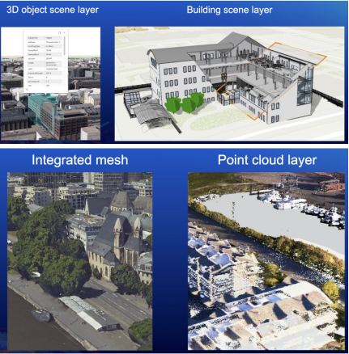

ArcGIS JS API for JavaScript:
3D Visualization
Arno Fiva, Grete Soosalu & Jesse van den Kieboom
Slides:
http://bit.ly/abc123
Session outline
-
Core concepts - 15 min
- Setting up a 3D application
- Sources of data
- Layer symbology
-
Use cases - 30 min
- Data-driven thematic visualizations
- Realistic 3D data
- Combining realistic and data-driven visuals
-
Q & A - 15 min
- Sli.do
Core concepts
Getting started with 3D
Setting up a 3D application
<html>
<head>
<meta charset="utf-8" />
<meta name="viewport" content="initial-scale=1,maximum-scale=1,user-scalable=no" />
<title> </title>
<style>
html,
body,
#viewDiv {
padding: 0;
margin: 0;
height: 100%;
width: 100%;
}
</style>
<link rel="stylesheet" href="https://jsdev.arcgis.com/4.23/esri/themes/light/main.css" />
<script src="https://jsdev.arcgis.com/4.23/"></script>
<script>
require(["esri/Map", "esri/views/SceneView"], (Map, SceneView) => {
const map = new Map({
basemap: "topo-vector",
});
const view = new SceneView({
container: "viewDiv",
map: map,
});
});
</script>
</head>
<body>
<div id="viewDiv"></div>
</body>
</html>
Setting up a 3D application
Setting up a 3D application
const map = new Map({
basemap: "satellite",
ground: "world-elevation",
});
Setting up a 3D application
const map = new Map({
basemap: "oceans",
ground: "world-topobathymetry",
});
Setting up a 3D application
const view = new SceneView({
container: "viewDiv",
viewingMode: "local",
map: map,
});
Setting up a 3D application
const clippingExtent = {
spatialReference: {
latestWkid: 3857,
wkid: 102100,
},
xmin: -13045241.329652093,
ymin: 4036780.474001343,
xmax: -13045119.666179948,
ymax: 4036937.733336518,
};
const view = new SceneView({
container: "viewDiv",
viewingMode: "local",
clippingArea: clippingExtent,
map: map,
});
Core concepts
Sources of data
Data types
-
Layers with features
- Points
- Lines
- Polygons
-
3D specific layers
- 3D object scene layer
- Building scene layer
- Integrated mesh layer
- Point cloud layer
Sources
-
ArcGIS Online
- Living Atlas – worldwide data
- Upload your own
- Create your own data with the editing widget
- Open data from other sources
Sources of data
-
ArcGIS Online
- Living Atlas – worldwide data

Sources of data
const layer = new FeatureLayer({
url: "https://services.arcgis.com/P3ePLMYs2RVChkJx/arcgis/rest/services/USA_Major_Cities/FeatureServer"
});
const map = new Map({
basemap: "gray-vector",
ground: "world-elevation",
layers: [layer]
});
const layer = new FeatureLayer({
portalItem: {
id: "85d0ca4ea1ca4b9abf0c51b9bd34de2e"
},
});
const map = new Map({
basemap: "gray-vector",
ground: "world-elevation",
layers: [layer]
});
Sources of data
-
ArcGIS Online
- Living Atlas – worldwide data
- Upload your own
Sources of data
-
ArcGIS Online
- Living Atlas – worldwide data
- Upload your own
- Create your own data with the editing widget

See more in public samples: Edit features in 3D with the Editor widget and Sketch in 3D
Sources of data
-
ArcGIS Online
- Living Atlas – worldwide data
- Upload your own
- Create your own data with the editing widget
-
Other open data sources
in formats such as:- GeoJSON
- WFS
- CSV
- OGC features

Core concepts
Layer symbology
Layer symbology: Overview
Layer symbology: Flat vs volumetric
Layer symbology: Points
Flat
const renderer2D = new SimpleRenderer({
symbol: new PointSymbol3D({
symbolLayers: [
new IconSymbol3DLayer({
resource: { primitive: "circle" },
size: 3, // in pt
}),
],
}),
});
Volumetric
const renderer3D = new SimpleRenderer({
symbol: new PointSymbol3D({
symbolLayers: [
new ObjectSymbol3DLayer({
resource: {
primitive: "cone",
},
width: 50000, // in meters
}),
],
}),
});
See more in a public sample: Thematic multivariate visualization (3D)
Layer symbology: Lines
let symbol2D = new LineSymbol3D({
symbolLayers: [
new LineSymbol3DLayer({
material: {
color: "blue"
},
size: 5, // in pt
join: "miter",
cap: "round",
}),
],
});
let symbol3D = new LineSymbol3D({
symbolLayers: [
new PathSymbol3DLayer({
profile: "quad",
material: {
color: "blue"
},
width: 5, // in meters
height: 30, // in meters
join: "miter",
cap: "round",
anchor: "bottom",
profileRotation: "all",
}),
],
});
See more in a public sample: Path visualization in 3D
Layer symbology: Polygons
const renderer2D = new SimpleRenderer({
symbol: new PolygonSymbol3D({
symbolLayers: [new FillSymbol3DLayer()],
}),
});
const renderer3D = new SimpleRenderer({
symbol: new PolygonSymbol3D({
symbolLayers: [new ExtrudeSymbol3DLayer()],
}),
});
See more in a public sample: Data-driven extrusion
Layer symbology: 3D-specific data types
3D-specific data types: 3D object scene layer
const layer = new SceneLayer({
portalItem: {
id: "fdfa7e3168e74bf5b846fc701180930b",
}
});
map.add(layer);
const solidEdges = new SolidEdges3D({
color: [0, 0, 0, 0.6],
size: 1
});
const thematicRenderer = new SimpleRenderer({
symbol: new MeshSymbol3D({
symbolLayers: [
new FillSymbol3DLayer({
material: {
color: "#ffffff",
colorMixMode: "replace",
},
edges: solidEdges,
}),
],
}),
});
layer.renderer = thematicRenderer;
See more in public samples:
Coloring options for textured buildings
and
Add edges to a SceneLayer
3D-specific data types: Building scene layer
const buildingLayer = new SceneLayer({
url: "https://tiles.arcgis.com/tiles/V6ZHFr6zdgNZuVG0/arcgis/rest/services/BSL__4326__US_Redlands__EsriAdminBldg_PublicDemo/SceneServer",
});
map.add(layer);
buildingLayer.allSublayers.forEach((layer) => {
switch (layer.modelName) {
case "StructuralColumns":
columnsLayer = layer;
excludedLayers.push(layer);
break;
default:
layer.visible = true;
}
});
columnsLayer.renderer = new SimpleRenderer({
symbol: new MeshSymbol3D({
symbolLayers: [
new FillSymbol3DLayer({
material: {
color: "red",
},
}),
],
}),
});
See more in a public sample: BuildingSceneLayer with Slice widget
3D-specific data types: Point cloud layer
const pcLayer = new PointCloudLayer({
url: "https://tiles.arcgis.com/tiles/Imiq6naek6ZWdour/arcgis/rest/services/PointCloud_urban/SceneServer"
});
map.add(pcLayer);
pcLayer.renderer = new PointCloudRGBRenderer({
field: "RGB",
pointSizeAlgorithm: {
type: "fixed-size",
useRealWorldSymbolSizes: false,
size: 3,
},
});
pcLayer.renderer = new PointCloudUniqueValueRenderer({
field: "CLASS_CODE", // field containing data for standard LAS classification
pointSizeAlgorithm: pointSizeAlgorithm,
pointsPerInch: 25,
colorUniqueValueInfos: [
{
values: ["1"],
label: "Unassigned",
color: [178, 178, 178],
},
{
values: ["2"],
label: "Ground",
color: [168, 112, 0],
},
{
values: ["5"],
label: "High vegetation",
color: [205, 245, 121],
},
{
values: ["6"],
label: "Building",
color: [229, 75, 65],
},
{
values: ["7"],
label: "Low Point",
color: [229, 0, 0],
},
],
});
See more in public samples: PointCloudLayer - toggle renderers and PointCloudLayer - intensity color modulation
3D-specific data types: Integrated mesh layer
const layer = new SceneLayer({
url: "https://tiles.arcgis.com/tiles/cFEFS0EWrhfDeVw9/arcgis/rest/services/Buildings_Frankfurt_2021/SceneServer",
});
map.add(layer);
const walkingLayer = new FeatureLayer({
url: "https://services.arcgis.com/V6ZHFr6zdgNZuVG0/arcgis/rest/services/Walking_time_Frankfurt_Cathedral/FeatureServer",
elevationInfo: {
mode: "on-the-ground",
},
});
See more in a public sample: IntegratedMeshLayer
Coding demos
3D visualization use cases
Data-driven thematic visualizations
Realistic 3D data
Combining realistic and data-driven visuals